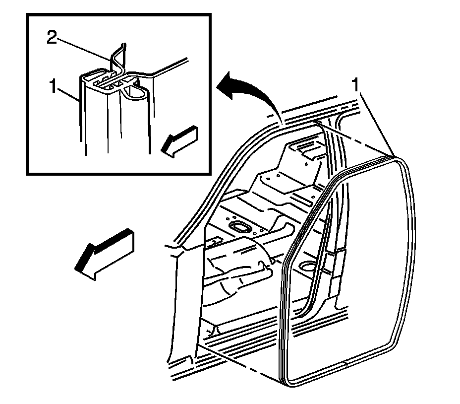

Front Door Opening Weatherstrip Replacement (Crew Cab)
Front Door Opening Weatherstrip Replacement (Crew Cab)
Removal Procedure
1. Remove the front door sill plate. Refer to Front Side Door Sill Plate Replacement .

2. Remove the weatherstrip from the pinch-weld flange.
Installation Procedure
1. Align the weatherstrip to the door opening with the 2 dots positioned on the upper right and left side.
2. Align the weatherstrip to the door opening with the bond joint positioned at the lower center of the door opening.
3. Install the weatherstrip to the pinch-weld flange. Ensure that the weatherstrip is fully seated.
4. Install the front door sill plate. Refer to Front Side Door Sill Plate Replacement .